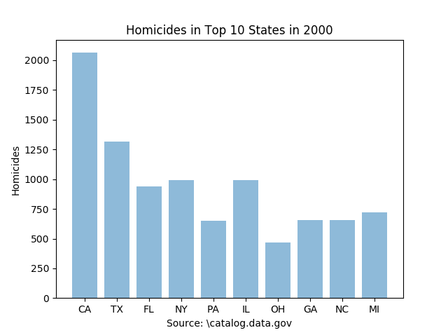

Data Analysis: Homicides in the Top Ten Populated States in the year 2000
In this section, the topic of Big Data and a way to represent data were important so
the task assigned was to search through data, find the data we wanted to represent then represent that data in a form of
a graph. MY partner, Nathan Campos, and I went on data.gov to find possible data sets to look through in order to find
information that we could display as graph. We both decided to look through a data set that contained causes of death from
2000 to 2013 and from each state. This information came from the NCHS (National Center for Health Statistics). The data we
decided to collect was the number of homicides in the top ten populated states in the year of 2000.

The graph on top was created on Canopy using python 2. The actual code cannot be provided
due to the fact that I lost my flashdrive. The code consisted of multiple data points for the amount of deaths (y-axis)
and the state it pertains to (x-axis). The data was then assigned to a variable in which that variable would be in an
algorithm that would visually display the data. What I learned was that it would have been much easier to reference the
original sheet of data and stating what lines to grab the data from instead of manually plugging in the data. The overall
process of making the program to visually display the data was easy since we have worked with pie charts before. I learned
that there are more efficient ways in displaying data than one would think. I could have used Excel instead of Canopy.